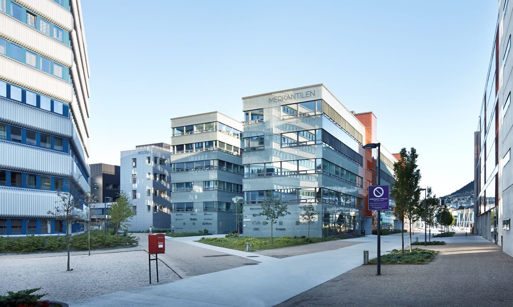
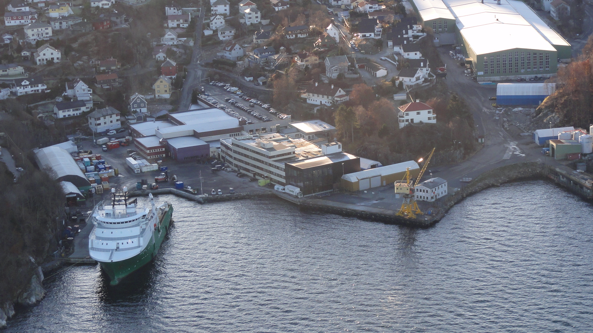
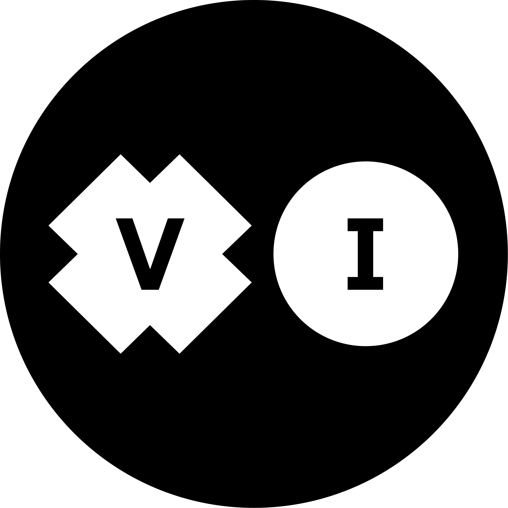
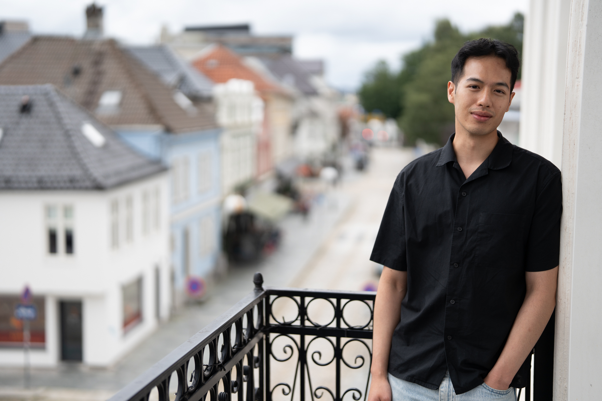

Naphat Amundsen
A curious fullstack developer who enjoys doing things he doesn't know how to do. While currently living in Bergen, Norway, he occasionally wonders why he is putting up with being rained on constantly.
A portrait of Naphat
- Photo:
- Tormod from Visito
Published Saturday 8. August 2026
Written by Naphat Amundsen
AI Summary
- Born in Bangkok, moved to Norway young. Speaks Norwegian, English and Thai; keeps trying (and mostly failing) to learn Japanese so he can watch anime without subtitles.
- BSc in mathematics from University of Tromsø, MSc in machine learning from University of Bergen.
- Started as a fullstack dev at Stacc Insight AS, covering backend, infrastructure and security.
- IslandGarden AS as senior systems developer and technical lead, where he ran a real machine learning project among other things.
- Now Senior Consultant at Visito AS, working on AI-based solutions.
Beware, AI generated content may contain errors
Born in Bangkok, Thailand he moved to Norway when he was young. Thus, he got the knowledge of multiple languages for free. He reads, writes and speaks Norwegian, English and Thai. He attempts to learn Japanese in order to one day fulfill his dream of watching anime without subtitles, but it has so far been a fruitless endeavor accompanied by Duolingo.
Career
He finished a Bachelors of Science in mathematics at the University of Tromsø, which was then followed up with a Master of Science at the University of Bergen specializing in Machine Learning.
- I work as a software developer. I started working professionally at Stacc Insight AS in 2012. It was my first workplace straight out of my masters. I had barely done any kind of software engineering before, so it was quite a lot to learn for me.
At Stacc Insight AS he worked as a full-stack developer, working with backend, infrastructure and frontend. He quickly became well versed in backend, infrastructure and security, pioneering better security posture and development standards.

The Stacc offices
- Photo:
- GC Rieber
After a two year run at Stacc Insight AS a fellow student from University of Bergen reached out to him, asking if he wanted to work with him at IslandGarden AS.
- I said yes. It was good timing. I felt I needed to get exposed to new technologies and ways of working.
He then started working at IslandGarden AS. A small IT firm within the W. Giertsen group. He became the technological lead as well as being a system developer, having a central role shaping the solutions at IslandGarden.
- It was fun while it lasted. I actually got to do a real machine learning project there too. I learned a lot being there as I got so much freedom doing technological decisions.

IslandGarden office was at the W. Giertsen facilities.
- Photo:
- W. Giertsen Vannteknologi
Today, Naphat works as a Senior Consultant at Visito AS, a Bergen based IT consultancy, delivering projects requiring everything from fullstack software development to machine learning and AI.

- Photo:
- visito.no

Naphat standing on the balcony of the Visito offices at Vaskerelven in Bergen.
- Photo:
- Tormod from Visito